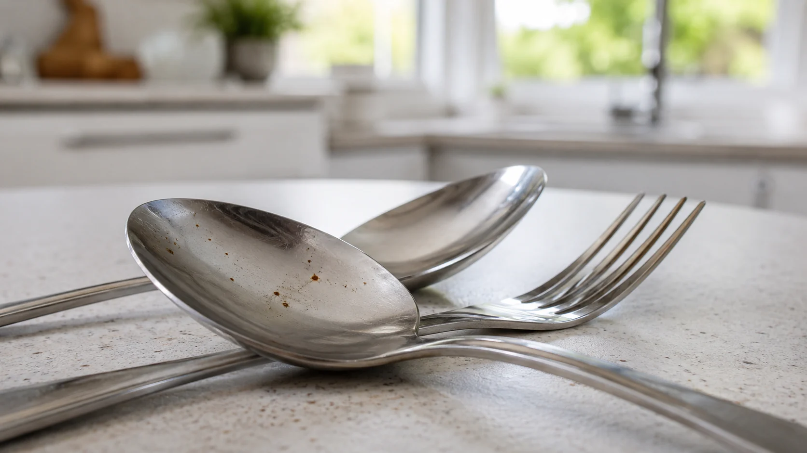
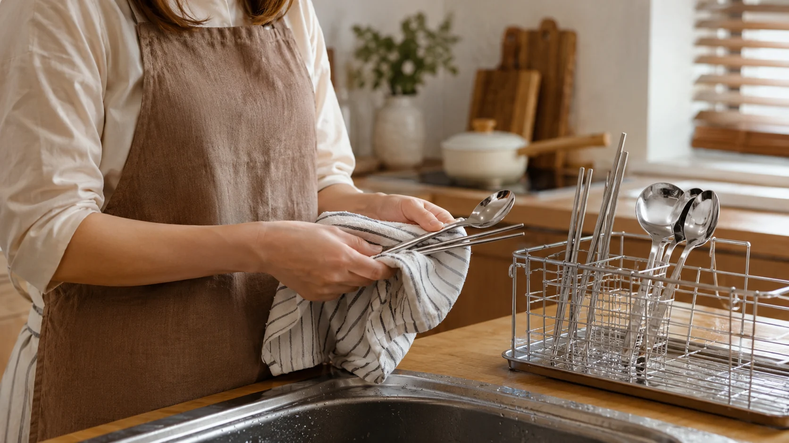
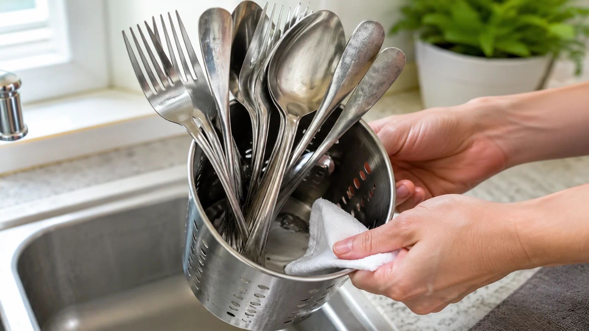
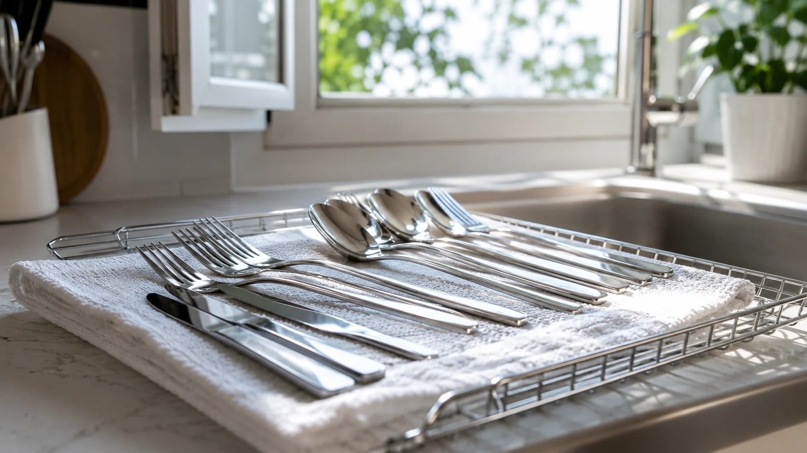
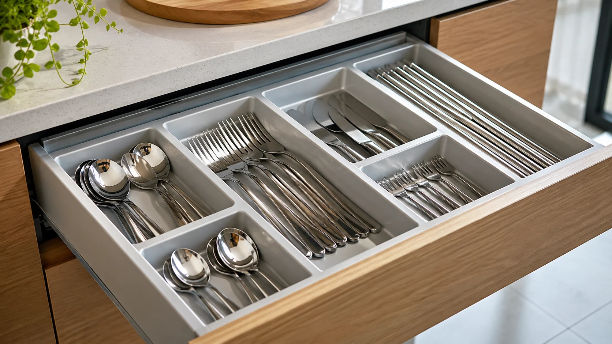

스테인리스 수저에 녹점이 생겼다면, 싸구려라서만은 아닙니다
스테인리스 수저 녹점이 생기는 이유와 세척 후 물기, 염분, 보관 습관을 생활 밀착형 문장으로 설명한 콘텐츠입니다.

스테인리스인데 녹이 생기면 괜히 속은 기분이 듭니다
주방 수저에 갈색 점이 보이면 순간적으로 제품이 이상한 건가 싶습니다. 댓글에서도 스테인리스는 녹이 안 생겨야 한다는 말과 관리에 따라 생길 수 있다는 말이 자주 부딪힙니다.
저도 예전에는 스테인리스 수저 녹을 보면 무조건 품질 문제라고 생각했습니다. 그런데 같은 수저라도 어떤 건 멀쩡하고 어떤 건 녹점이 생기는 걸 보고 보관 환경을 다시 보게 됐습니다.

스테인리스는 녹에 강한 소재이지만 모든 상황에서 완전히 무적은 아닙니다. 물기, 염분, 산성 성분, 다른 금속과의 접촉이 겹치면 작은 점처럼 자국이 생길 수 있습니다.
특히 수저통 바닥에 물이 고여 있으면 문제가 커집니다. 세척 후 식기 물기 제거를 대충 하면 보기보다 오래 습한 상태가 유지됩니다.
제가 느낀 건 수저 녹점 제거보다 먼저 수저통을 확인해야 한다는 점입니다. 생각보다 바닥이 축축한 집이 많습니다.

설거지 후 꽂아두기만 하면 끝이라는 습관, 여기서 녹점이 시작될 수 있습니다
스텐 식기 관리에서 가장 쉬우면서도 자주 놓치는 게 물기입니다. 설거지를 마친 뒤 그대로 꽂아두면 위에서 아래로 물이 흐르고, 수저 끝이나 통 바닥에 물이 남습니다.
저는 수저를 세워두면 자연스럽게 마른다고 생각했습니다. 그런데 수저끼리 겹친 부분은 생각보다 잘 마르지 않았고, 그 자리에 얼룩이나 점이 생기기 쉬웠습니다.
염분도 무시하기 어렵습니다. 국물, 젓갈, 김치 양념처럼 짠 음식이 묻은 상태로 오래 두면 표면에 부담이 갈 수 있습니다. 바로 씻기 어렵다면 물에 가볍게 헹궈두는 것만으로도 차이가 납니다.

수저 녹점 제거를 할 때 거친 철수세미로 박박 문지르는 분도 있습니다. 하지만 표면에 미세한 흠집이 생기면 오히려 이후 관리가 더 까다로워질 수 있습니다.
저는 부드러운 수세미와 베이킹소다를 활용해 살살 닦고, 마지막에는 꼭 마른 천으로 닦는 편입니다. 세게 문지르는 쾌감보다 표면을 덜 상하게 하는 쪽이 오래 가더라구요.

버려야 할 녹인지 닦아도 되는 자국인지 판단이 먼저입니다
작은 갈색 점이 표면에만 있다면 부드럽게 닦아 상태를 볼 수 있습니다. 하지만 깊게 패였거나 계속 번지는 느낌이 있다면 계속 사용하는 게 찝찝할 수 있습니다.
주방용품 보관에서는 수저통 자체도 중요합니다. 통풍 구멍이 부족하거나 바닥에 물이 고이는 구조라면 아무리 좋은 수저도 습한 환경에 계속 노출됩니다.
저는 수저통을 바꾸고 나서 녹점이 줄어든 경험이 있습니다. 그전에는 수저 품질만 의심했는데, 알고 보니 수저통 바닥 물기가 더 큰 문제였습니다.
또 다른 금속 제품과 뒤섞어 보관하는 것도 피하는 편이 좋습니다. 작은 스크래치나 접촉 자국이 생기면 관리가 더 어려워질 수 있습니다.
결국 스테인리스 수저 녹은 싸구려라서 생긴다고 단정하기 어렵습니다. 소재, 세척, 건조, 보관 방식이 함께 만든 결과일 수 있습니다.
수저 하나에 생긴 작은 점 때문에 괜히 찝찝해지는 건 자연스러운 일입니다. 다만 무조건 버리기 전에 우리 집 수저통과 건조 습관을 한 번 보는 것도 좋습니다. 여러분은 녹점이 보이면 바로 버리는 편인가요, 닦아보고 판단하는 편인가요.